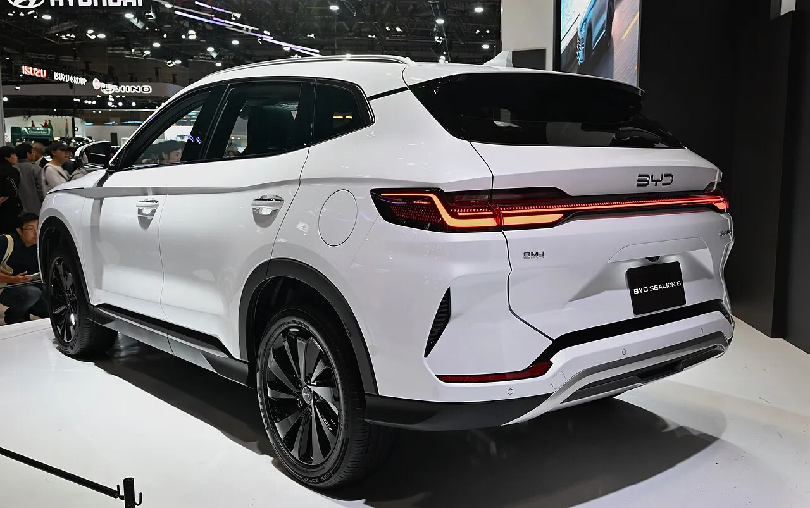
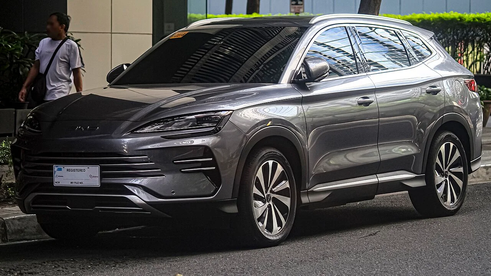
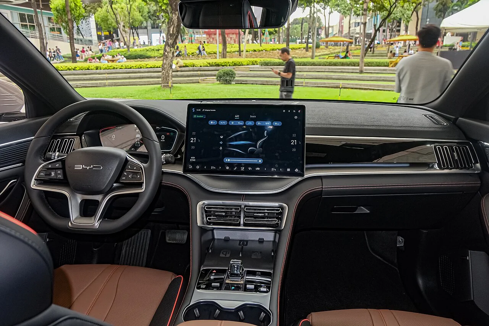
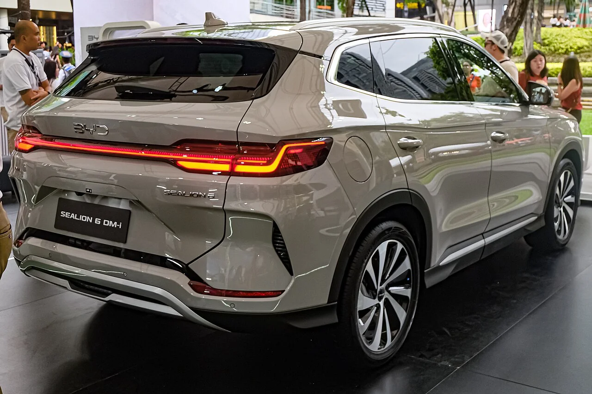
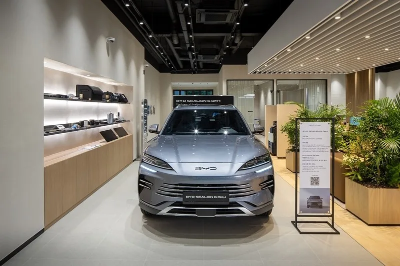

▲ BYD 씨라이언6 DM-i(해외 사양, 필리핀 BYD 전시 행사 촬영). 국내에서는 6월 26일 부산모빌리티쇼에서 공개돼 100일 만에 8월 500대 등록 실적이 확인됐다 ⓒ Ethan Llamas, Wikimedia Commons (CC BY-SA 4.0)
BYD코리아가 첫 플러그인 하이브리드(PHEV) 씨라이언6 DM-i를 부산모빌리티쇼에서 공개한 것은 2026년 6월 26일이다. 10월 6일 기준 출시 100일이 지났다. 3,750만 원이라는 가격이 쏘렌토·스포티지·투싼 하이브리드 구매자를 실제로 끌어왔는지, 숫자로 확인할 수 있는 만큼만 정리했다. 9월 수입차 등록 실적이 오늘 발표됐지만 씨라이언6 단독 판매량은 아직 공개된 곳을 찾지 못했다. 대신 국내 경쟁 모델의 9월 판매와 10월 1일 기준 공식 가격표를 함께 대조했다.
1. 100일 성적표 — 8월 500대, 브랜드 월 판매는 하락세
▲ BYD 씨라이언6 DM-i 전면. 국내 사양 사진이 아니라 필리핀 BYD 전시 행사(BYD Tech Tour)에서 촬영된 해외 사양이며, 국내에서는 6월 부산모빌리티쇼에서 첫선을 보였다 ⓒ Ethan Llamas, Wikimedia Commons (CC BY-SA 4.0)
씨라이언6 개별 실적이 공개된 것은 8월이 처음이다. 8월 등록 500대로 수입 PHEV 전체 1,334대의 37.5%를 차지했다. 씨라이언6를 제외한 수입 PHEV는 834대로 전년보다 16.3% 줄었고, 씨라이언6 덕에 전체가 33.8% 늘어난 셈이다. 해외 판매 집계 사이트는 8월 9위로 처음 상위 50위에 올랐다고 전한다(집계 범위는 명확하지 않다). 반면 BYD 브랜드 전체 월 판매는 6월 4,652대를 정점으로 줄고 있다.
| 월 | BYD 등록 대수 | 수입차 브랜드 순위 | 비고 |
|---|---|---|---|
| 6월 | 4,652대 | - | 월간 역대 최다, 상반기 누적 1만 1,675대 |
| 7월 | 2,846대 | 4위 | 6월 대비 급감, 점유율 12.2%에서 10% 미만 |
| 8월 | 3,002대 | 4위 | 씨라이언6 500대 첫 집계 |
| 9월 | 2,614대 | 4위 | 전월 대비 12.9% 감소, 씨라이언6 단독 수치 미확인 |
| 1~9월 누적 | 2만 137대 | 올해 1월부터 9월까지의 합계(전자신문). 9월 수입차 전체 3만 4,904대 중 약 7.5% | |
해석은 조심해야 한다. 씨라이언6 500대는 8월 BYD 3,002대의 약 16.7%다. 하지만 BYD 브랜드 월 판매가 6월 대비 9월에 약 44% 줄어든 흐름 속에서 PHEV 한 모델이 만든 반등폭은 제한적이다. 9월 등록 실적에서 씨라이언6 단독 판매량은 확인되지 않았다. 한국수입자동차협회(KAIDA)의 모델별 통계가 모두 공개되면 추가 확인이 필요하다.
9월 수입차 전체 등록은 3만 4,904대로 8월보다 17.1% 늘었고, 테슬라 1만 2,372대, BMW 6,066대, 벤츠 5,477대, BYD 2,614대 순이었다. BYD 점유율은 9월 약 7.5%로, 6월 12.2%에서 한 자릿수로 내려왔다. 같은 달 국내 시장에서 기아 쏘렌토는 6,957대, 스포티지는 5,497대가 판매됐다(하이브리드 포함 모델 합계, 기아 발표 기준 보도). 씨라이언6 9월 단독 판매량은 미확인이므로 8월 500대와 단순 비교하면 쏘렌토 월 판매의 약 7% 수준이다(월이 다른 값이라 카프리즘 추정). 이 격차가 이 기사 제목 질문에 대한 현재의 답이다. 아직 쏘렌토를 눌렀다고 말할 수 없다.

▲ 전시된 씨라이언6 DM-i 후면(해외 오토쇼 촬영 추정, 촬영지 미확인). 8월 500대는 BYD 브랜드 월 판매의 약 6분의 1이다 ⓒ TTTNIS, Wikimedia Commons (CC0)
2. 가격·사양 — 3,750만 원에 무엇이 들어가나

▲ 씨라이언6 DM-i 전면부(해외 촬영). 파노라마 선루프와 3D 서라운드뷰가 기본 사양으로 소개됐다 ⓒ Ethan Llamas, Wikimedia Commons (CC BY-SA 4.0)
씨라이언6 DM-i 전륜구동의 권장소비자가격은 3,750만 원이다. 1.5리터 가솔린 엔진(96kW)에 구동모터(150kW)를 결합하고 18.3kWh LFP 블레이드 배터리를 얹었다. 전기모드 주행거리는 복합 기준 최대 70km로 발표됐으나 기사에 따라 유럽 기준 수치라는 설명이 붙어 있어 국내 인증 수치는 별도로 확인해야 한다. 12.3인치 디지털 계기판과 15.6인치 인포테인먼트, 360도 서라운드뷰, 3.3kW V2L이 기본이다.
| 항목 | 씨라이언6 DM-i(FWD) |
|---|---|
| 가격 | 3,750만 원(전륜구동) |
| 엔진·모터 | 1.5L 가솔린 96kW, 구동모터 150kW |
| 배터리 | 18.3kWh LFP 블레이드 |
| 전기 주행거리 | 복합 최대 70km(유럽 기준 표기 보도, 국내 인증치 별도 확인) |
| 복합연비 | 15.2km/L(시승기 인용) |
| 급속충전 | 30%→80% 약 30분 |
| 화면 | 12.3인치 계기판 + 15.6인치 인포테인먼트 |
| 안전·편의 | 360도 서라운드뷰, 7에어백, 파노라마 선루프(시승기 인용) |
| 차체 | 전장 4,775mm, 휠베이스 2,765mm(BYD 발표 기준 보도) |
| 사륜구동(미출시) | 시스템 238kW·550Nm, 공차중량 2,145kg(해외 사양 기준, 국내 인증 대기) |
참고 일부 보도는 시스템 출력을 96kW(130PS)로 적었지만, 다른 기사에서는 엔진 96kW와 모터 150kW를 따로 적었다. 두 값은 서로 다른 지표이므로 공식 제원표를 확인해야 한다. 사륜구동은 시스템 238kW(324마력), 최대토크 550Nm, 0→100km/h 5.9초(BYD 해외 사양 기준)로 알려졌지만, 국내 인증값(연비·주행거리)은 한국에너지공단 신고 대기 중이고 판매 시점과 가격은 발표되지 않았다. "4,000만 원 이하"는 FWD 가격을 바탕으로 한 기자 전망일 뿐 확정이 아니다. 후륜 120kW 모터가 추가돼 공차중량이 1,960kg에서 2,145kg으로 185kg 늘어난다는 점도 효율 비교 때 변수다.

▲ 씨라이언6 DM-i 실내(해외 전시차). 회전식 대형 센터 디스플레이가 기본이다 ⓒ Ethan Llamas, Wikimedia Commons (CC BY-SA 4.0)
3. 보조금 — 가격 경쟁의 전제가 다르다
BYD가 전기차로 받지 못한 국고 보조금(최대 580만 원 수준)이 PHEV에서는 애초에 문제가 되지 않는다. 뉴시스는 BYD가 국내 공급망 기여와 사후서비스 기준 미충족으로 전기차 보조금에서 제외됐고, PHEV는 어떤 브랜드든 보조금을 받지 못해 규제 리스크 없는 틈새시장을 확보했다고 보도했다. BYD는 보조금 제외에 맞서 7월 한 달간 국고 보조금 상당액(109만~169만 원)을 자체 부담하는 지원 프로그램도 운영했다. PHEV 구매보조금은 2023년에 폐지됐고 취득세 감면도 2024년 말 종료된 것으로 알려져 있어(2차 출처), 지금 남은 세제 혜택은 개별소비세 감면 최대 70만 원이다. 개소세는 출고 시 가격에 자동 반영된다. 3,750만 원이 감면 반영 후 가격인지는 BYD코리아 공식 가격표에서 확인하지 못했으므로 구매 상담 시 반드시 확인해야 한다.
2027년 변수 8월 3일 발표된 정부 세제개편안은 하이브리드차 개소세 감면(최대 70만 원)을 2026년 말 종료하는 방안을 담았다(국회 통과 전). 확정되면 국산 HEV·PHEV 모두 내년 출고분부터 교육세·부가세 연동분까지 100만 원 안팎 가격이 오를 수 있다(카프리즘 추정). PHEV가 같은 감면 대상인지는 법안 확정본을 확인해야 한다.
의미는 간단하다. 전기차 가격 경쟁이 보조금 소진으로 흔들리는 4분기에도 PHEV 3,750만 원은 보조금 변수가 없다. 하이브리드 비교는 정가 대 정가로 볼 수 있다는 뜻이다. 반대로 국산 하이브리드 역시 보조금을 받지 못하니 가격 격차는 그대로 구매 판단에 반영된다.
4. 국산 하이브리드와 비교 — 쏘렌토는 근접, 투싼·스포티지는 아래

▲ 기아 스포티지 하이브리드. 3,750만 원이면 스포티지 상위 트림과 겹치는 가격대다 ⓒ Avante2025, Wikimedia Commons (CC BY 4.0)
가격표를 나란히 놓으면 위치가 보인다. 기아 공식 가격표(2027년형, 세제혜택 후)에서 쏘렌토 하이브리드(1.6 터보) 2WD는 프레스티지 3,963만 원, 노블레스 4,299만 원, 시그니처 4,576만 원이고 4WD 프레스티지는 4,295만 원부터다. 스포티지 하이브리드는 프레스티지 3,436만 원, 노블레스 3,803만 원, 시그니처 4,038만 원이다(10월 1일 시행 가격). 투싼 하이브리드는 2026년형 기준 모던 3,318만 원부터로 알려졌으나 이는 2차 출처이고, 현대차 공식 2027년형 가격표는 이번 조사에서 확인하지 못했다. 뉴시스는 3,750만 원이 투싼·스포티지 하이브리드 상위 트림과 같고 싼타페·쏘렌토급 이하라고 짚었다.
| 모델 | 구동 방식 | 시작가(기준 트림) | 씨라이언6(3,750만 원)과의 차이 |
|---|---|---|---|
| BYD 씨라이언6 DM-i | PHEV(충전 필요) | 3,750만 원(전륜구동) | - |
| 기아 쏘렌토 하이브리드 2WD | HEV | 3,963만 원(프레스티지) / 4,299만 원(노블레스) | 프레스티지가 213만 원 비쌈 |
| 기아 쏘렌토 하이브리드 4WD | HEV | 4,295만 원(프레스티지) | 쏘렌토가 545만 원 비쌈 |
| 기아 스포티지 하이브리드 | HEV | 3,436만 원(프레스티지) / 3,803만 원(노블레스) | 프레스티지보다 314만 원 비쌈, 노블레스와는 53만 원 차 |
| 현대 투싼 하이브리드 | HEV | 3,318만 원(모던, 2026년형 2차 출처, 2027년형 미확인) | 씨라이언6가 432만 원 비쌈 |
| 모델(국내) | 9월 판매 | 비고 |
|---|---|---|
| 기아 쏘렌토 | 6,957대 | 6월에는 8,561대로 월간 1위였다 |
| 기아 스포티지 | 5,497대 | 하이브리드 포함 모델 합계 |
| BYD 브랜드 전체 | 2,614대 | 씨라이언6 단독 수치 미공개 |
숫자만 보면 씨라이언6는 쏘렌토 하이브리드 기본형보다 213만 원 낮고, 스포티지 하이브리드 노블레스(3,803만 원)와는 53만 원 차이다. 풀옵션에 가까운 단일 사양을 3,750만 원에 파는 구조라 국산 중상위 트림과 비교하는 편이 공정하다. 차급 면에서는 BYD가 중형 SUV로 내놓았으므로 쏘렌토와의 비교가 자연스럽다. 다만 PHEV는 충전 환경이 있어야 EV 주행의 장점이 살고, 국산 HEV는 충전 없이 연비로 승부하는 차이가 있다. 연비·출력 같은 세부 제원은 트림마다 달라 직접 비교는 하지 않았다.

▲ 기아 쏘렌토 하이브리드(국내 촬영). 씨라이언6의 직접 비교 상대로 거론되는 모델이다 ⓒ Damian B Oh, Wikimedia Commons (CC BY-SA 4.0)

▲ 현대 투싼(NX4 페이스리프트, 독일 촬영). 하이브리드 시작가는 씨라이언6보다 400만 원대 낮다 ⓒ Alexander-93, Wikimedia Commons (CC BY-SA 4.0)

▲ 씨라이언6 DM-i 후면(해외 촬영). 연결형 테일램프가 특징이다 ⓒ Ethan Llamas, Wikimedia Commons (CC BY-SA 4.0)
5. 구매 전 따져볼 것 — 가격표에 없는 항목들

▲ BYD 전시장에 전시된 씨라이언6 DM-i. 전시장·서비스센터 접근성이 구매 변수다 ⓒ BYD코리아
가격 말고 따져볼 항목은 여섯 가지다. 첫째, 충전 환경이다. 18.3kWh 배터리는 아파트 완속 충전이 가능해야 전기 주행 효용이 크다. 둘째, 전기 주행거리 70km의 기준이다. 유럽 기준 표기이므로 국내 인증 수치를 확인해야 한다. 셋째, 서비스망이다. BYD는 전기차 보조금에서 사후서비스 기준 미충족이 문제가 됐다. 넷째, 중고차 잔존가치다. 신규 브랜드 PHEV의 감가율은 아직 통계가 없다. 다섯째, 사륜구동 출시 시점이다. 324마력 AWD가 4,000만 원 이하로 나온다는 전망은 아직 확정이 아니다. 여섯째, 연말 세제다. 하이브리드 개소세 감면이 종료되면 국산 HEV 가격이 오를 수 있어 비교 기준이 바뀐다.
참고 BYD 브랜드 월 판매가 6월 4,652대에서 9월 2,614대로 줄었다는 점은 "가격으로 화제를 끈 뒤 지속 수요가 얼마나 남느냐"의 시험대가 아직 끝나지 않았음을 보여준다. 씨라이언6가 쏘렌토·스포티지 수요를 얼마나 가져왔는지는 판매량 비교 자료가 부족해 이 기사에서는 단정하지 않는다.
이미 시승기와 사륜구동 인증 기사에서 주행 인상과 AWD 제원을 다뤘다. 이 글은 출시 100일 시점의 판매 흐름과 가격 위치에 초점을 맞췄다. 관련 기사로는 씨라이언6 DM-i 시승기와 사륜구동 인증 기사가 있다.
6. 정리 — 가격은 쏘렌토 아래, 실적은 이제 시작
체크포인트
- 씨라이언6 DM-i는 6월 26일 공개, 가격 3,750만 원(전륜구동 기준)이다.
- 8월 등록 500대로 수입 PHEV의 37.5%를 차지했고, 9월 단독 수치는 미확인이다.
- BYD 브랜드는 6월 4,652대에서 9월 2,614대로 줄었지만 누적 2만 137대로 수입차 4위를 유지했다.
- PHEV는 국고 구매보조금 대상이 아니어서 가격 비교는 정가 대 정가이고, 개소세 감면은 최대 70만 원이다.
- 9월 국내 쏘렌토는 6,957대, 스포티지는 5,497대로, 씨라이언6 8월 500대와는 격차가 크다.
- 쏘렌토 HEV 2WD(3,963만 원)보다 213만 원 저렴, 스포티지(3,436만 원)·투싼(3,318만 원, 2026년형 2차 출처) 시작가보다는 비싸다.
3,750만 원은 쏘렌토를 대체할 만한 가격이지만, 충전 환경과 서비스망, 전기 주행 인증치를 따져 본 뒤에야 의미가 생긴다. 판매 흐름은 KAIDA 월별 통계로 계속 확인하는 편이 정확하다.